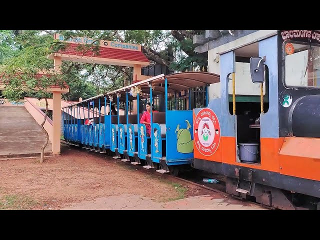
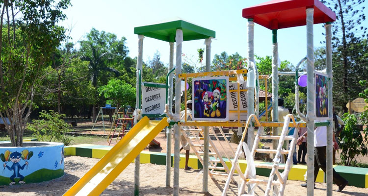
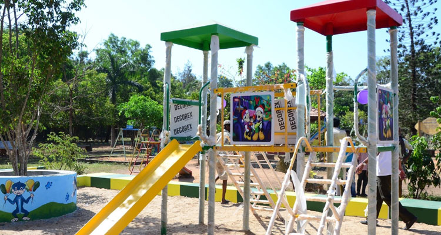
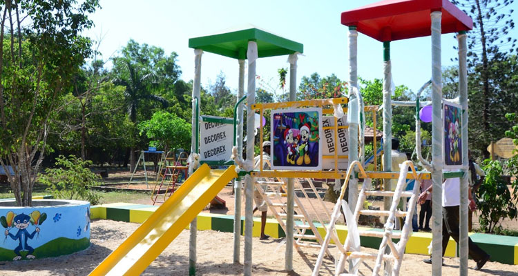
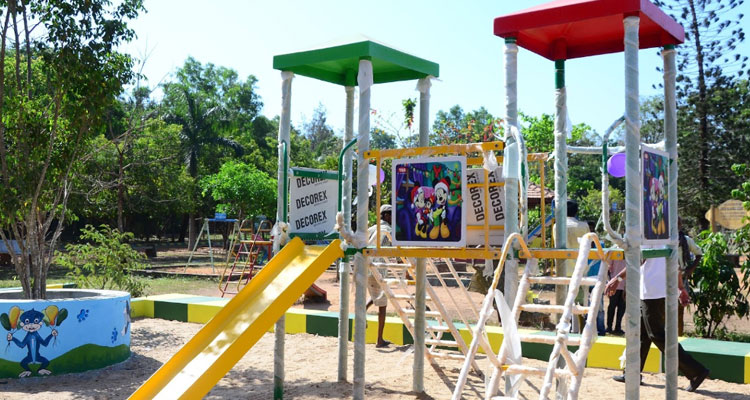

Gallery

 


Kadri Park is a serene place for families and nature enthusiasts.The park spans over 200 acres of lush greenery, scenic trails, and vibrant flower gardens. Our mission is to provide a natural retreat for visitors to relax, unwind, and connect with nature. We host a variety of events throughout the year, including guided nature walks, bird watching tours.
We are committed to preserving the natural beauty of the park while providing educational and recreational opportunities for all ages. Our dedicated team of volunteers and staff work tirelessly to maintain the park's pristine condition and ensure a memorable experience for all our visitors.
Explore our scenic trails that wind through forests, meadows, and along the riverbanks. Each trail offers a unique perspective on the park's diverse ecosystem, with opportunities to spot various wildlife and enjoy breathtaking views. Our well-marked trails cater to all levels of hikers, from easy walks to more challenging hikes.
Fun for kids of all ages, our playground is equipped with modern and safe play structures. Children can enjoy swings, slides, climbing frames, and a sandbox, all designed to provide endless hours of entertainment. The playground is conveniently located near picnic areas, making it easy for families to spend quality time together.
Our picnic areas are perfect spots for family gatherings, birthday parties, or a relaxing meal outdoors. With plenty of tables, barbecue grills, and shaded areas, you can enjoy a delightful picnic surrounded by nature. Each picnic area offers a unique setting, from open meadows to secluded spots by the river.
